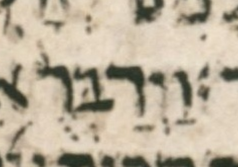

| n | 6 |
| citation:book | 1Kings |
| citation:c | 12 |
| citation:v | 7 |
| citation:position | 1 |
| author:name | Ben Denckla |
| author:mail | bdenckla@alum.mit.edu |
| author:confirmed | true |
| description | Note that while creating the pointed qere, the transcriber changed a qubuts to a shuruq |
| lc:folio | Folio_194A |
| lc:column | 1 |
| lc:line | 3 |
| lc:credit | Credit: Sefaria.org. |
| reftext | וַיְדַבְּר֨וּ |
| refuni | vav patah yod sheva dalet patah bet dagesh sheva resh qadma vav dagesh |
| changetext | וַיְדַבְּר֨וּ |
| changeuni | vav patah yod sheva dalet patah bet dagesh sheva resh qadma vav dagesh |
| notes:note | The manuscript’s pointed ketiv (MPK) is וַיְדַבְּרֻ֨. |
| notes:note-2 | The qubuts in the MPK becomes a shuruq dot in the qere. |
| notes:note-3 | In WLC, this word has not only an a-note but also a c-note, presumably because WLC has qadma where BHS (in error) has pashta. |
| notes:note-4 | As a reminder, a WLC c-note (bracket-c note) is defined as follows: |
| notes:note-5 | «We read an accent in ל differently from BHS. (This is similar to the note “]C”, but the latter refers to accent differences against BHQ.)» |
| transnotes:transnote:action | Add |
| transnotes:transnote:type | a |
| transnotes:transnote:beforetext | וַיְדַבְּר֨וּ |
| status | Pending |
| type | NoTextChange |